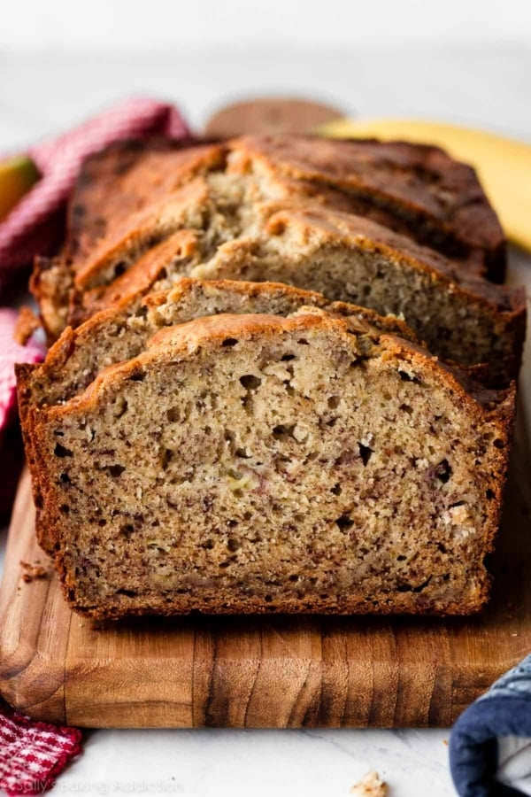

Banana Bread

Description
This recipe is very easy to follow. It will give you the moistest cake and
richest flavor. There are only 9 ingredients and you're only required the use two bowls.
How much better can it get?
Make sure to follow along and leave a comment down below to help us improve our work!
Ingredients
- 3 ripe bananas
- 1/3 cup butter, melted
- 1/2 cup sugar
- 1 egg, beaten
- 1 tsp vanilla extract
- 1 tsp baking soda
- salt to taste
- 1 1/2 cups all-purpose flour
- 1/2 cup chopped pecans
Steps
- Preheat oven to 350˚F (180˚C).
- In a bowl, add the bananas and mash until smooth.
Add in the melted butter and stir until well combined.
- Add the sugar, egg, vanilla, baking soda,
salt, and flour, and stir until the batter is smooth.
- Add in the chocolate chips and pour the batter into a greased loaf pan.
Top with additional chocolate chips.
- Bake for 50 minutes to an hour, or until a toothpick comes out clean.
- Cool completely before serving.
- Enjoy!
Home